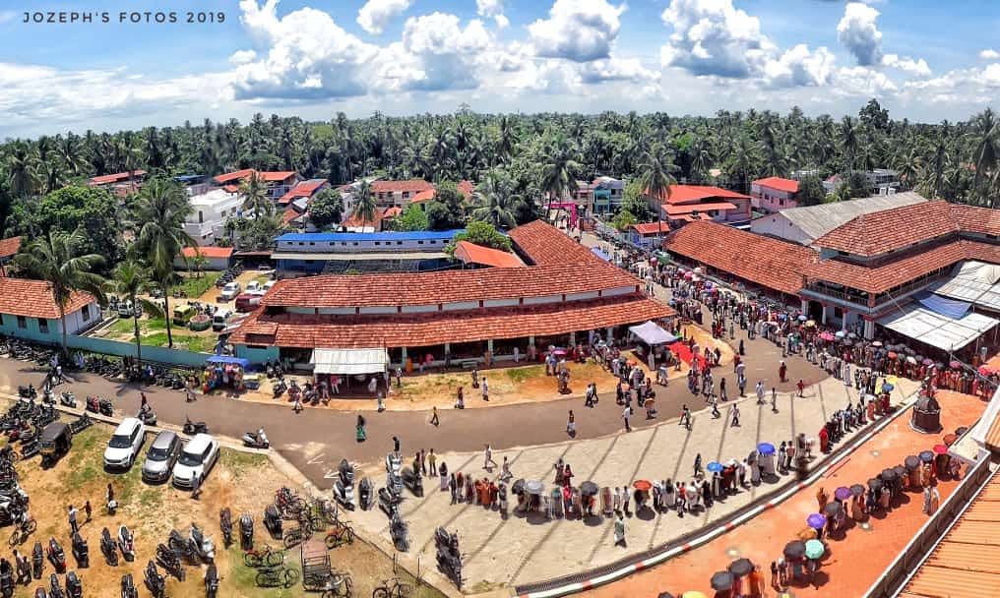

വിശുദ്ധ ലാസറിന്റെ തിരുനാൾ
സെന്റ് ലാസർ ചർച്ച്കോട്ടപ്പടി
ST. LAZARUS CHURCH · KOTTAPADI
Programme
ദിവസം തിരിച്ചുള്ള പരിപാടികൾ
ഏതൊക്കെ സമയം, എവിടെയൊക്കെ — ഓരോ ദിവസത്തെയും പരിപാടികൾ.
From Start to Finish
പെരുന്നാൾ — തുടക്കം മുതൽ ഒടുക്കം വരെ
The Main Attraction
മേളങ്ങൾ — എവിടെ, എപ്പോൾ?
ബാൻഡ് സെറ്റ്, ചെണ്ടമേളം, നാദസ്വരം, ശിങ്കാരിമേളം… ഓരോ സമൂഹവും കൊണ്ടുവരുന്ന മേളങ്ങൾ എവിടെ എത്തും, എപ്പോൾ എത്തും എന്ന് ഇവിടെ നോക്കാം.
🎉 പെരുന്നാളിന്റെ ഹൃദയം
ജനുവരി 2-ന് 21 യൂണിറ്റുകളിൽ നിന്ന് അമ്പും വളയും — ബാൻഡ് സെറ്റ്, നാദസ്വരം, ചെണ്ടമേളം അകമ്പടിയോടെ. ജനുവരി 3-ന് ക്ലബ്ബുകളുടെ ബാൻഡ് മേളവും വർണ്ണമഴയും. ദിവസം / തരം തിരഞ്ഞെടുക്കുക, അല്ലെങ്കിൽ ബാൻഡിന്റെയോ യൂണിറ്റിന്റെയോ പേര് തിരയുക.
3D Kottapadi
കോട്ടപ്പടി 3D മാപ്പ് — യൂണിറ്റ് എഴുന്നള്ളിപ്പുകൾ
ജനുവരി 2 — ഏത് സമയത്ത് ഏതൊക്കെ യൂണിറ്റുകൾ വഴിയിലുണ്ട് എന്ന് സമയ സ്ലൈഡർ നീക്കി നോക്കാം. തിളങ്ങുന്ന പൊട്ട് = അമ്പ്, വള എഴുന്നള്ളിപ്പ്. യൂണിറ്റിന്റെ പേരിൽ അമർത്തിയാൽ അവരുടെ വഴി മാത്രം.

3D കാണാൻ ഈ ബ്രൗസറിൽ WebGL ഇല്ല.
The Units
ഓരോ യൂണിറ്റും
സമയക്രമത്തിൽ — കാർഡിൽ തൊട്ടാൽ തിരിഞ്ഞ് വിവരങ്ങൾ കാണാം: സമയം, ബാൻഡ് / നാദസ്വരം / ചെണ്ട ടീം.
3D Church
പള്ളി 3D യിൽ
ദീപാലങ്കാരത്തോടെ പള്ളി — ചുറ്റും തിരിച്ച് നോക്കാം. പകൽ / രാത്രി മാറ്റാം.

3D കാണാൻ ഈ ബ്രൗസറിൽ WebGL ഇല്ല.
About the Church
സെന്റ് ലാസർ ചർച്ച്, കോട്ടപ്പടി
ഗുരുവായൂരിനടുത്ത് കോട്ടപ്പടിയിൽ തെങ്ങിൻതോപ്പുകൾക്ക് നടുവിൽ തലയുയർത്തി നിൽക്കുന്ന ഈ ദേവാലയം തൃശ്ശൂർ അതിരൂപതയിലെ (സീറോ മലബാർ) ഇടവകയാണ്. വെള്ള നിറത്തിലുള്ള മുഖപ്പും ഇരട്ട ഗോപുരങ്ങളും വലിയ താഴികക്കുടവും പള്ളിയുടെ മുഖമുദ്രയാണ്.
വിശുദ്ധ ലാസർ — ബഥാന്യയിലെ മർത്തായുടെയും മറിയത്തിന്റെയും സഹോദരൻ, യേശുവിന്റെ പ്രിയ സ്നേഹിതൻ. മരിച്ച് നാലാം ദിവസം യേശു അദ്ദേഹത്തെ കല്ലറയിൽ നിന്ന് ഉയിർപ്പിച്ചു (യോഹന്നാൻ 11).
Gallery
തിരുനാൾ കാഴ്ചകൾ
Reach Us
എങ്ങനെ എത്താം
സെന്റ് ലാസർ ചർച്ച്, കോട്ടപ്പടി, ഗുരുവായൂരിനടുത്ത്, തൃശ്ശൂർ ജില്ല
Google Maps-ൽ തുറക്കുകഎഴുന്നള്ളിപ്പ് സമയത്ത് പ്രധാന റോഡുകളിൽ ഗതാഗത നിയന്ത്രണം ഉണ്ടാകും. വോളണ്ടിയർമാരുടെ നിർദ്ദേശങ്ങൾ പാലിക്കുക.
ലിസ്റ്റ് പൂർണ്ണമല്ല. നിങ്ങളുടെ പരിപാടി ചേർക്കാൻ വാട്ട്സാപ്പ് ചെയ്യുക:
തിരുകർമ്മങ്ങളുടെ തത്സമയ സംപ്രേഷണ ലിങ്ക് ഉടൻ ചേർക്കും.
ലൈവ് കാണുക